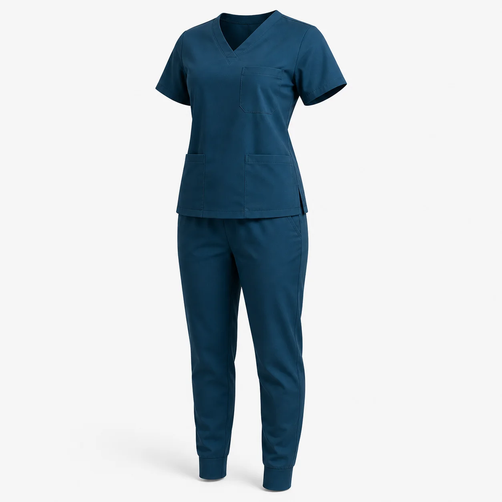

Kumaş
Ortam, hareket ve bakım düzenine uygun dokuma ve esneklik seçimi.
Klinik, laboratuvar, veterinerlik, bakım ve güzellik ekipleri için üst ve pantolondan oluşan kurumsal scrub takımları üretiyoruz. Model, kumaş, renk, beden ve logo ayrıntıları ihtiyaca göre planlanır.

Scrub takım seçimi yalnızca renkten ibaret değildir. Üst yaka formu, cep sayısı, pantolon beli, paça yapısı ve hareket payı; personelin gün içindeki görevine göre birlikte değerlendirilmelidir.
V yaka, kruvaze ve panelli üst seçenekleri farklı kurumsal görünümler oluşturur. Kumaş seçimi yapılırken çalışma ortamı, kullanım süresi, yıkama düzeni ve beklenen hareket konforu dikkate alınır. Beden dağılımı numune üzerinden doğrulanabilir.
Göğüs veya kol bölgesine kurum logosu uygulanabilir; departmanlar renk, biye ya da panel ayrımıyla gruplanabilir. Sağlık personeli forması, hemşire forması ve klinik üniforması projelerinde onaylanan model bilgileri devam siparişlerini kolaylaştırmak için kayıt altına alınır.
Takımları katalogdaki Scrub Takımlar filtresinde birlikte inceleyebilirsiniz.
Ortam, hareket ve bakım düzenine uygun dokuma ve esneklik seçimi.
Görev ve kullanım biçimine göre beden dağılımı ve numune kontrolü.
Göğüs, alt ve pantolon ceplerinin taşınacak ekipmana göre planlanması.
Renk, panel, biye ve logo yerleşiminin ekip kimliğine uyarlanması.
Özel üretimde minimum sipariş 50 adettir. Model, renk, beden dağılımı ve logo uygulaması proje kapsamında değerlendirilir.
Kumaş ve logo yapısına göre nakış veya uygun baskı yöntemi numune aşamasında belirlenebilir.
Kumaş kartelasının elverdiği renklerde ana gövde, biye ve panel seçenekleri kurumsal kimliğe göre planlanabilir.
Adet, görev, beden dağılımı, renk, logo ve hedef teslimat tarihini paylaşın.